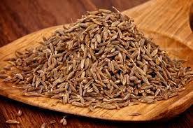

Ayurveda is a traditional Indian system of medicine. It aims to preserve health and wellness by keeping the mind, body, and spirit in balance and preventing disease rather than treating it.
To do so, it employs a holistic approach that combines diet, exercise, and lifestyle changes .
Ayurvedic herbs and spices are also an important component of this approach. They’re thought to protect your body from disease and offer a variety of health benefits, including improved digestion and mental health.
Here are some Ayurvedic herbs and spices with science-backed health benefits.
1. Ashwagandha
Ashwagandha (Withania somnifera) is a small woody plant native to India and North Africa. Its root and berries are used to produce a very popular Ayurvedic remedy .
It’s considered an adaptogen, which means that it’s believed to help your body manage stress more effectively. Research has shown that it reduces levels of cortisol, a hormone that your adrenal glands produce in response to stress .
There’s also evidence linking ashwagandha to lower levels of anxiety and improved sleep in people with stress and anxiety disorders .
Moreover, research shows that ashwagandha may enhance muscle growth, memory, and male fertility, as well as lower blood sugar levels. However, larger studies are needed to confirm these benefits .
Finally, there’s evidence that it may help reduce inflammation and boost your immune system, though more studies are needed .
2. Boswellia
Boswellia, also known as Indian frankincense or olibanum, is made from the resin of the Boswellia serrata tree. It’s known for its easily recognizable spicy, woody aroma.
Research suggests that it may be particularly effective at reducing inflammation by preventing the release of inflammation-causing compounds known as leukotrienes .
Human studies link boswellia to reduced pain, improved mobility, and a greater range of movement in people with osteoarthritis and rheumatoid arthritis. It may also help prevent oral infections and fight gingivitis .
Moreover, it may improve digestion in people with ulcerative colitis and Crohn’s disease, as well as breathing in people with chronic asthma, but more controlled human studies are needed .
3. Brahmi
According to test-tube and animal studies, brahmi appears to have strong anti-inflammatory properties. More human studies are needed to confirm these potential anti-inflammatory benefits are as effective as common NSAIDs .
Studies also link it to improvements in learning rates, attention, memory, and information processing, as well as reduced symptoms of attention deficit hyperactivity disorder (ADHD), such as inattention, impulsivity, poor self-control, and restlessness .
However, other human studies have shown mixed results on these benefits.
4. Cumin

Cumin is a spice native to the Mediterranean and Southwest Asia. It’s made from the seeds of the Cuminum cyminum plant, which are known for their distinctive earthy, nutty, and spicy flavor.
Some animal studies show cumin to be beneficial in controlling blood lipids and protecting the liver from a high fat diet .
Plus, cumin may protect against type 2 diabetes by lowering blood sugar levels and improving insulin sensitivity. It may also protect against heart disease by increasing HDL (good) cholesterol while reducing triglycerides and LDL (bad) cholesterol.
Some studies show bioactive compounds in cumin may have anti-inflammatory action, but these studies did not confirm any effects on diabetes, insulin sensitivity or heart disease .
Cumin likewise appears to possess antimicrobial properties that may reduce the risk of certain foodborne infections. Still, more studies are needed to confirm this .
5. Turmeric
Turmeric, the spice that gives curry its characteristic yellow color, is another popular Ayurvedic remedy.
Curcumin, its main active compound, has powerful antioxidant and anti-inflammatory properties. Test-tube research shows that it may be equally or even more effective than some anti-inflammatory drugs — without all of their side effects .
Also, turmeric may help protect against heart disease, in part by improving blood flow as effectively as exercise or certain pharmaceutical drugs .
Human studies suggest tumeric may improve symptoms of depression and anxiety .
Moreover, compounds in turmeric may help preserve brain function by increasing brain levels of brain-derived neurotrophic factor (BDNF). Low levels of BDNF have been linked to disorders like Alzheimer’s and depression .
6. Licorice root
Licorice root, which is native to Europe and Asia, comes from the Glycyrrhiza glabra plant and holds a central place in Ayurvedic medicine.
Test-tube and human studies suggest that licorice root may help reduce inflammation and fight viruses and bacteria. It also appears to offer relief from a sore throat and promote oral health by protecting against dental cavities and Candida .
This Ayurvedic spice may likewise help prevent or manage heartburn, bloating, nausea, belching, and stomach ulcers. When applied to the skin, it may reduce symptoms of skin rash, including redness, itching, and swelling .

 Turmeric, the spice that gives curry its characteristic yellow color, is another popular Ayurvedic remedy.
Curcumin, its main active compound, has powerful antioxidant and anti-inflammatory properties. Test-tube research shows that it may be equally or even more effective than some anti-inflammatory drugs — without all of their side effects .
Also, turmeric may help protect against heart disease, in part by improving blood flow as effectively as exercise or certain pharmaceutical drugs .
Human studies suggest tumeric may improve symptoms of depression and anxiety .
Moreover, compounds in turmeric may help preserve brain function by increasing brain levels of brain-derived neurotrophic factor (BDNF). Low levels of BDNF have been linked to disorders like Alzheimer’s and depression .
Turmeric, the spice that gives curry its characteristic yellow color, is another popular Ayurvedic remedy.
Curcumin, its main active compound, has powerful antioxidant and anti-inflammatory properties. Test-tube research shows that it may be equally or even more effective than some anti-inflammatory drugs — without all of their side effects .
Also, turmeric may help protect against heart disease, in part by improving blood flow as effectively as exercise or certain pharmaceutical drugs .
Human studies suggest tumeric may improve symptoms of depression and anxiety .
Moreover, compounds in turmeric may help preserve brain function by increasing brain levels of brain-derived neurotrophic factor (BDNF). Low levels of BDNF have been linked to disorders like Alzheimer’s and depression .